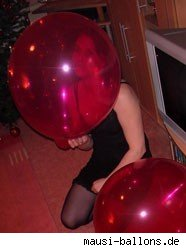
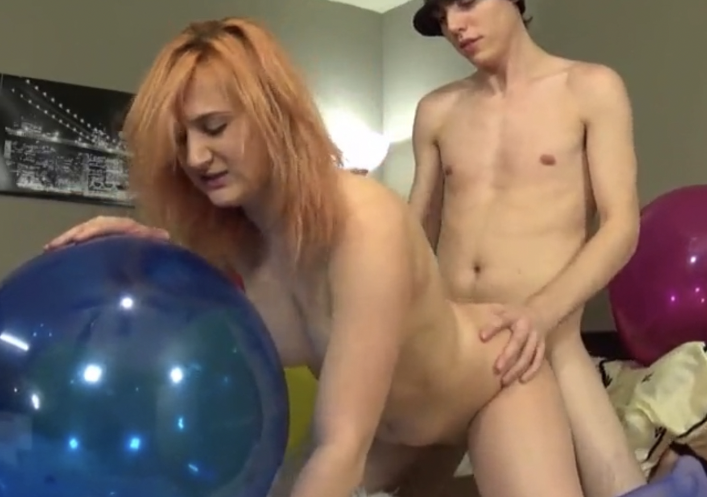

Balloon fetishists, or "looners," find themselves sexually aroused by the rubbery objects, be it from the color, smell, sound and/or the act of inflation. A cursory Google search brings up a lengthy list of Web sites we can't link to showing naked women straddling giant balloons, blowing up balloons or rubbing them against their bodies like some sort of filthy, X-rated birthday party. And, of course, YouTube features a wide assortment of videos in which women sexily pop balloons, the climactic event for those who call themselves "poppers" ("non-poppers" prefer not to destroy the balloon).
I wanted to take a moment and tell you about the new video from Mellyloon, "Renee's Overinflation Rumble." The video begins with Renee surrounded by a room full of balloons. Decked out in her sexy outfit and heels, she begins to squeeze and stomp several balloons until they meet their destiny. Throughout the video, Renee talks directly to the camera telling you how much she loves to blow up and pop balloons. Lines such as "Are you going to pop for me?", "It feels so good blowing these up.", and "You like to see these big balloons go bang, don't you?" are just some of the ways Renee lets you know how excited she gets when balloons are around. Filled with overinflation, this video showcases Renee's fearlessness when it comes to balloons. They are no match for her powerful lungs. To close out the first half of the video, Renee gets her hands on a huge white balloon. This scene is simply awesome. Get the video and see what happ! ens to this big balloon as Renee puffs away. The second half of the video finds Renee dressed in a skimpy negligee and heels and doing some vicious stomping using those spikes. In addition to more overinflation here, Renee also likes to rub the tight balloons and tease you right before giving it the final few breaths of air. Sometimes she just can't stand the excitement and has to use her nails to pop them. The second half also has lots more of sitting and squeezing to pop. Seeing her bounce up and down while resting her butt on those balloons is amazing. When they finally pop she lets out the cutest laugh, and lets you know that she loves doing it. Renee tackles a 24" yellow Qualatex and keeps blowing and blowing until the neck on that balloon gets huge. You can feel the tension mount as she delivers the final few puffs into that monster balloon. I think you can guess what happens next. To end the video, Renee goes o! n a literal popping rampage. She has to take care of all the balloons left in the room, so she stomps and squeezes them until there are no survivors. She playfully looks into the camera as she throws the latex shards in the air. I highly recommend this video. It has something for all---overinflation, stomping, squeezing, and, of course, the lovely Renee. What could be better? Check it out for yourself. You'll be glad you did.

Sadnoise performed with balloons, popping them into the cocoquantus an esoteric wooden delay instrument, with mellyloon balloon fetish clips4sale previews projected onto and behind them.
